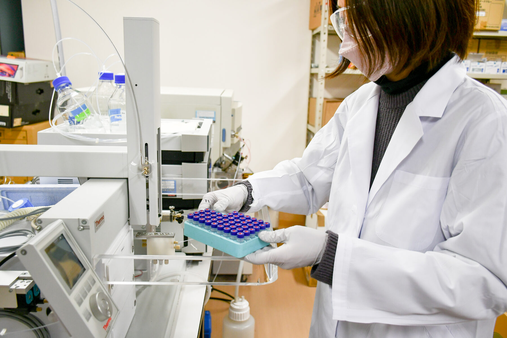
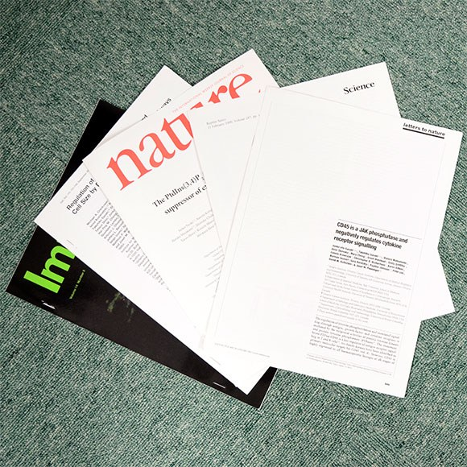
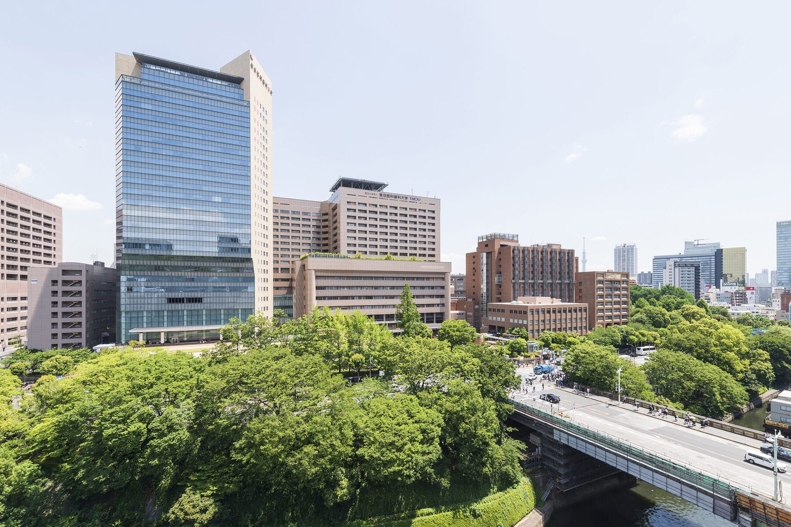
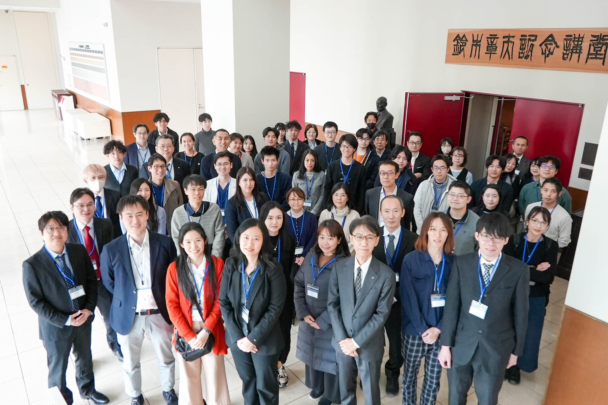
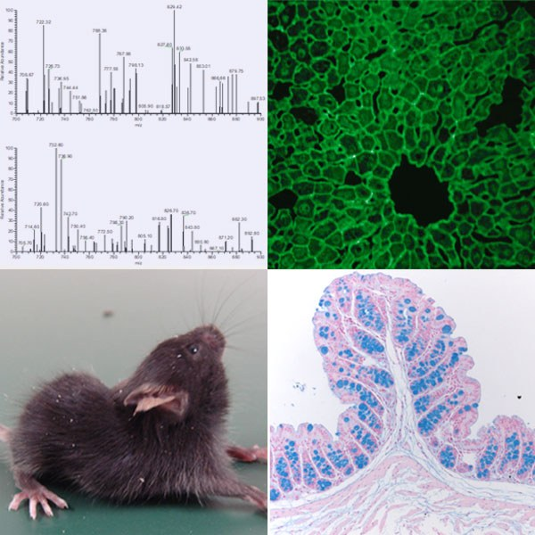
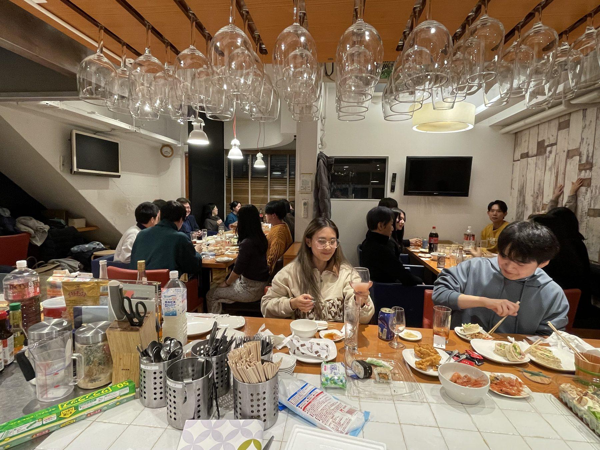
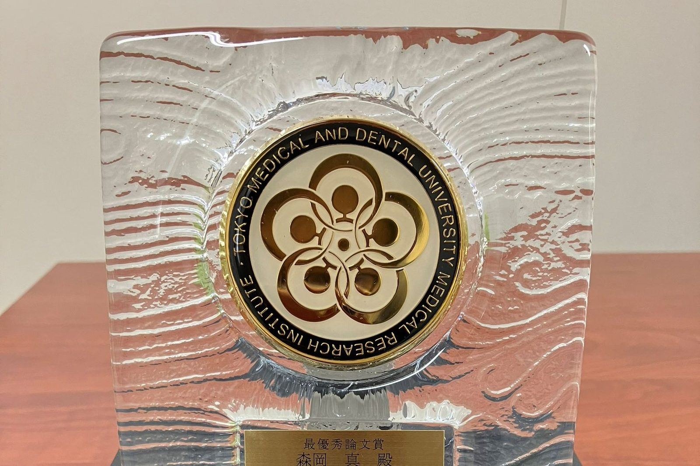
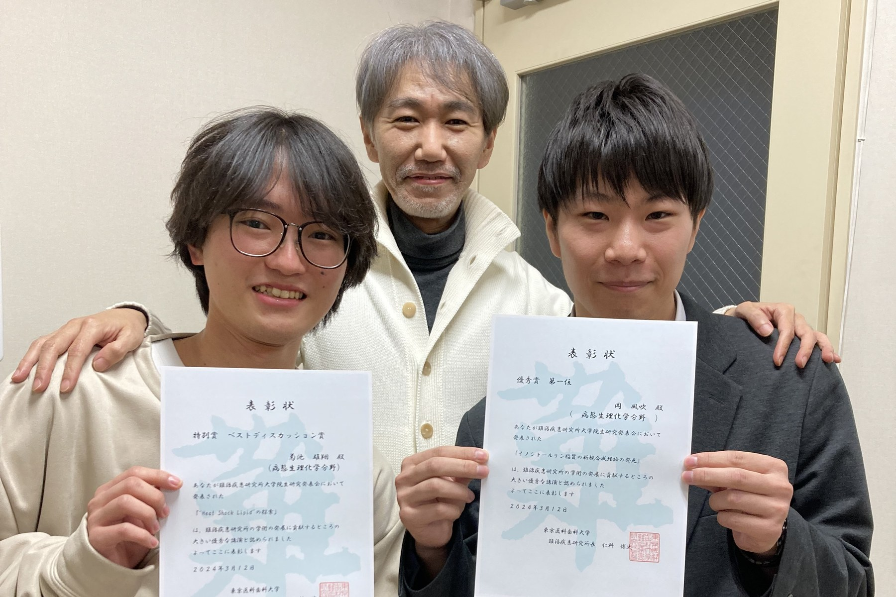

東京科学大学 総合研究院 難治疾患研究所 病態生理化学分野
大学院 医歯学総合研究科 脂質生物学分野
ホスホイノシタイド（イノシトールリン脂質）をはじめとするリン脂質の生物学を軸に、がん・炎症性疾患・神経変性疾患、そして老化の分子メカニズムの解明に取り組んでいます。生命を司る新たな原理を探求し、難治疾患の予防と治癒につながる治療法の実装を目指しています。








ホスホイノシタイド（PIPs）を中心とした脂質生物学の視点から、がん・炎症性疾患・神経変性疾患の病態を分子レベルで解明します。
ホスホイノシタイドは、細胞内外のシグナル伝達や生体膜動態を制御する微量リン脂質です。約50種類のホスホイノシタイド代謝酵素遺伝子改変マウスを用いて、がん、炎症性疾患、神経変性疾患などの難治疾患の発症・進展機構を解明します。
質量分析データとAI・機械学習を組み合わせ、疾患で変動する未知の脂質分子を探索します。それらを産生・分解する代謝酵素を同定し、生理機能や作用機序を解明します。
脂質は細胞膜だけでなく、オルガネラ、細胞質、細胞外環境にも分布し、生命現象を制御しています。脂質の局在制御や脂質情報を読み取り細胞応答へ変換する分子機構を解明します。
リン脂質を高深度に測定する質量分析技術を開発し、ヒト疾患の臨床検体に適用します。疾患、遺伝子異常、生活習慣、老化に伴う脂質変動を解析し、層別化マーカーを開発します。
加齢に伴うホスホイノシタイド代謝の変化が、老化や加齢性疾患にどのように関与するのかを明らかにします。遺伝学的解析と独自の脂質計測技術を組み合わせ、老化を制御する脂質代謝機構の解明と、新たな介入法の開発を目指します。
主要論文の一覧です。全リストはPubMedにてご確認ください。
東京科学大学・難治疾患研究所は、充実した教育・研究環境を提供しています。
文部科学省の国際卓越研究大学制度において、東京科学大学が正式に認定。大学ファンドより助成を受け、世界最高水準の研究環境を構築します。
詳細を見る → 高精度実験支援ロボットとAIによる実験自律化を推進するロボット実験支援室を設置。大規模・高精度な実験を効率的に実施できる国内でも先進的な研究インフラです。
詳細を見る → 文部科学省 認定「難治疾患共同研究拠点」に認定。所内研究者のみならず、国内外研究者との共同研究・機器利用を積極的に支援しています。
詳細を見る → 文部科学省 事業文部科学省・学際領域展開ハブ形成プログラムに採択。難治疾患研究所が国立精神・神経医療研究センター、東京都医学総合研究所と連携し、多階層にわたるストレス疾患の病態解明を目指します。
詳細を見る → 研究基盤強化「大学の枠を超えた研究基盤設備強化・充実プログラム」により、先端解析機器の整備と技術教育体制を強化しています。
詳細を見る → 2023年度 採択「加齢に伴うホスホイノシタイドの変容と老化・疾病の本態解明」がAMED-CRESTに採択。老化制御性脂質プロファイルの解明と、老化制御法の開発を目指します。
詳細を見る →多様なバックグラウンドを持つメンバーが協力し、研究を進めています。
教員・大学院生・学部生 約20名が在籍しています。
研究室テーマに関連する教科書的な解説と、関連リンク集を公開しています。学生・一般の方もどうぞ。
細胞膜に存在する微量リン脂質群。ホスファチジルイノシトールのイノシトール環3, 4, 5位水酸基のリン酸化パターンが異なる8種類が存在し、標的となる多様な機能タンパク質を制御します。
続きを読む →PIPs代謝酵素の異常は、がん・炎症・神経変性・代謝疾患から白内障・骨粗鬆症・早発卵巣不全まで多岐にわたる病態を引き起こします。約50種の代謝酵素の遺伝子改変マウス研究から見えてきた、PIPs代謝破綻と疾患の関係を概観します。
続きを読む →加齢に伴いPIPsプロファイルが変容することを独自のPRMC-MS法で見出しました。老化制御性のPIPs分子種・代謝酵素の同定を通じ、根本的な老化現象へのPIPs代謝系の関与を解明します（AMED-CREST「老化」課題）。
続きを読む →構造予測AI「AlphaFold3」に生成AIと統計解析を組み合わせ、脂質とタンパク質の結合を定量的に予測・検証する新しい計算アプローチに取り組んでいます。
続きを読む →JR御茶ノ水駅（中央線・総武線）御茶ノ水橋口から御茶ノ水橋を渡る
または 東京メトロ丸ノ内線 御茶ノ水駅 地上出口（お茶ノ水門がすぐ見えます）
お茶の水門から大学構内に入構
立体駐車場を左手に沿って直進、左折するとM&Dタワー入口が右斜め前方に見えます
エレベーターで19階へ（病態生理化学分野）
🗺️ Googleマップで開く